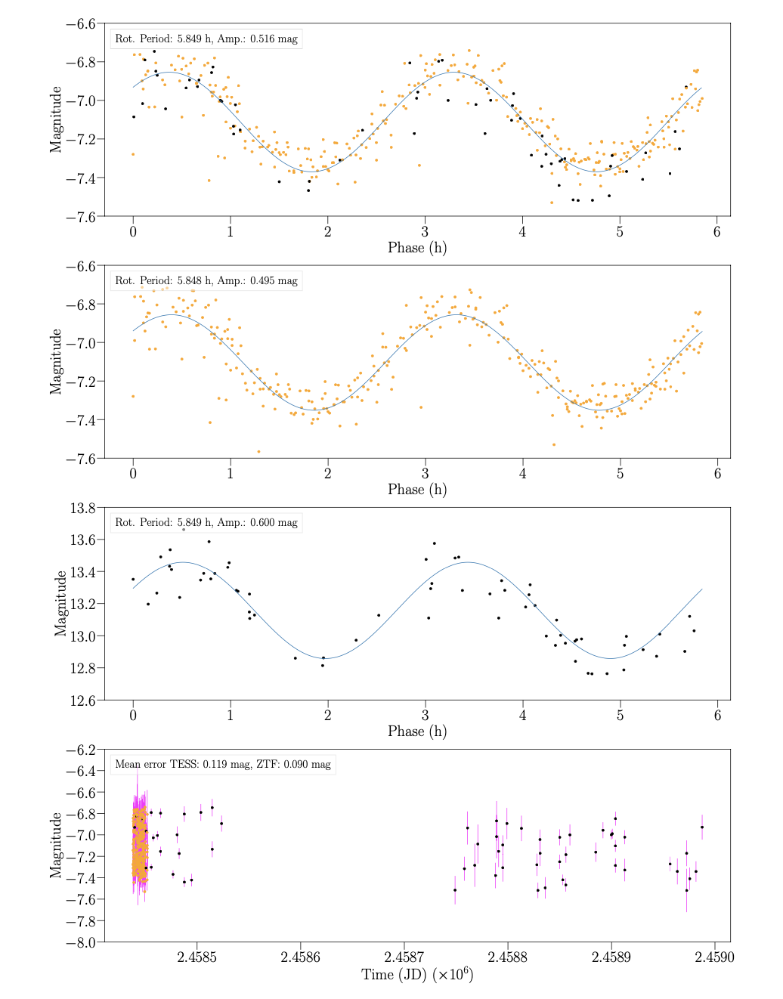
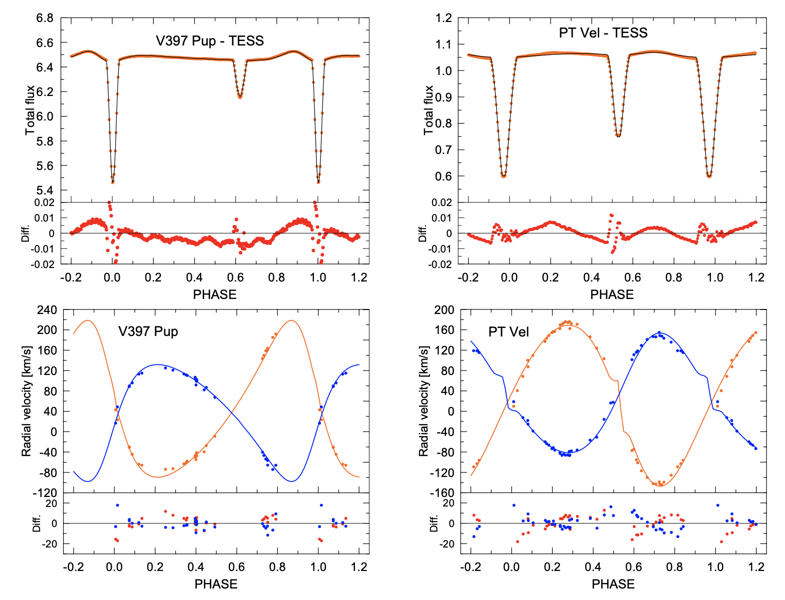
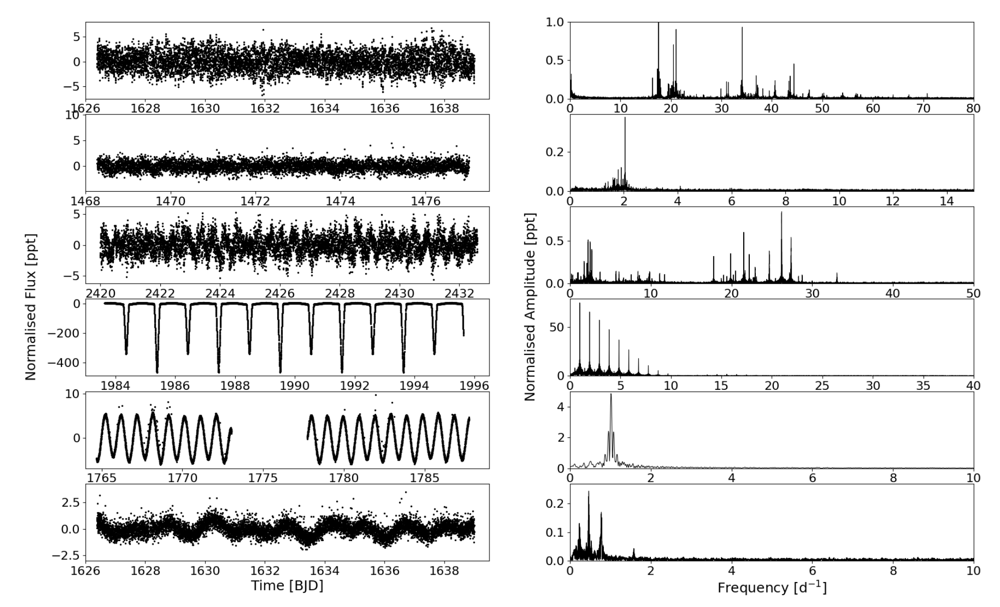

Welcome TESS followers to our latest news bulletin!
First things first – if you are interested in citizen science with TESS, you can check out the latest project called Eclipsing Binary Patrol. Launched on Sep 3, 2024, Eclipsing Binary Patrol aims at confirming that a particular object observed by TESS is indeed an eclipsing binary, ensuring the orbital period is correct, and verifying that the target star is the source of the detected eclipses.
This week, we are looking at three recent papers from the archive. Enjoy!
Asteroid Period Solutions from Combined Dense and Sparse Photometry (Gowanlock et al. 2024) :
Measuring rotation periods of asteroids is challenging for both ground- and space-based efforts. While the former typically enable long observing campaigns, they are mainly constrained by the day-night cycle and correspondingly sparse continuous photometry. In contrast, the latter can provide comparably longer continuous dwell time at the price of typically shorter campaigns, which generally limits their sensitivity to shorter rotation periods. Gowanlock et al. (2024) present a detailed analysis of the utility of combined space- and ground-based observations of asteroids obtained by TESS and the Zwicky Transient Facility (ZTF) for improving the fidelity of the corresponding period measurements. TESS produced more than 5 million observations of nearly 29000 asteroids, with a mean number of observations per object of ~383. Of these, 3168 objects have been observed by ZTF as well. The authors applied a GPU implementation of the Lomb-Scargle Periodogram analysis to these 3168 asteroids, searching for rotation periods between 2 hours and 10,000 hours using an uniformly-spaced frequency grid of 10 million frequencies. Gowanlock et al. (2024) found a large peak in the period distribution of the asteroids observed by ZTF at 48 hrs with no corresponding feature in the TESS data, suggesting a potential alias of the diurnal signal, and. Combining the two datasets, however, did not remove the 48-hrs peak, and also introduced a second, smaller peak at 24 hours. Additionally, the authors compared the measured periods from the combined TESS+ZTF data for 222 asteroids with known periods from the Asteroid Lightcurve DataBase (LCDB). Assuming that an exact match corresponds to less than 3% differences, Gowanlock et al. (2024) found an exact match between the ZTF/TESS and the LCDB data for ~60/74% of the objects, respectively. The authors argue that the higher percentage for TESS data is expected from the corresponding higher cadence, and note that the percentage of exact matches increases to 78% for the combined TESS+ZTF observations. Combining TESS photometry with ZTF data, Gowanlock et al. (2024) demonstrated that the known rotation periods of 222 asteroids can be reliably measured for 85% of the sample.
Apsidal motion and TESS light curves of three southern close eccentric eclipsing binaries: GM Nor, V397 Pup, and PT Vel (Wolf et al. 2024) :
Short-period, eccentric eclipsing binary stars are prime targets for studying the effects of apsidal motion and the corresponding implications for stellar formation, structure, and evolution. Such studies require precise measurements of the respective physical and orbital parameters, as well as long-term monitoring for potential deviations of the orbital period from linear ephemeris. Wolf et al. (2024) present a comprehensive investigation of three detached eclipsing binary systems observed by TESS – GM Nor, V397 Pup, and PT Vel. The targets have spectral types between B9V and A3V, are relatively bright (V ~ 6-11 mag), have orbital periods in the range of ~2-3 days, and were observed by TESS in multiple sectors at both short- and long-cadence. The authors complemented the TESS data with follow-up photometric observations from multiple ground-based observatories and ESO archival spectroscopy. To evaluate the apsidal motion of the systems and the corresponding internal structure constants, Wolf et al. (2024) performed a comprehensive lightcurve and radial velocity modeling with the PHOEBE code. The authors found that GM Nor has the shortest apsidal motion period (~80 years) and V397 Pup – the longest (~300 years), with PT Vel in the middle at ~160 years. Additionally, Wolf et al. (2024) obtained precise new measurements for the components stars of all three systems, down to ~3% relative uncertainty for the stellar radii of the V397 Pup and PT Vel components. The authors found no indications of tertiary components in any of the systems in either the corresponding lightcurves, the observed-minus-calculated eclipses times, or in the spectra. Thanks to TESS observations, the authors were able to obtain sufficiently precise absolute measurements of the masses and sizes of two short-period, eccentric eclipsing binary stars that are suitable for testing theoretical models of stellar formation, structure, and evolution.
Variability and stellar pulsation incidence in Am/Fm stars using TESS and Gaia data (Durfeldt-Pedros et al. 2024) :
Am/Fm stars are pulsating, chemically-peculiar A/F-type stars exhibiting an over-abundance of Ba, Sr, Y, Zn, Zr and under-abundance of Ca and Sc. Important tracers of mixing processes, these stars often show rotation rates below 120 km/sec and more than half of them are in binary systems. Durfeldt-Pedros et al. (2024) investigate the pulsating processes of Am/Fm stars observed by TESS and Gaia, perform a statistical analysis of the sample, and test whether turbulent pressure can be responsible for oscillations exhibited by these stars. To determine the variability of the sample of 1276 targets, the authors computed Lomb-Scargle periodograms of the TESS lightcurves, adopting a S/N threshold of 10. The authors found significant variability for 637 of the targets (about 50% of the sample), which they manually inspected and classified as one of three different types – pulsators, eclipsing binaries, and other variations; the remaining 649 targets show no detectable indications of photometric variability. Overall, Durfeldt-Pedros et al. (2024) found that 318 of the variable stars (~25% of the total sample) are represented by Am/Fm and ro Puppis stars, ~90% of which exhibit p-mode pulsations 210 of the variables (17%) show indications of binarity and/or rotational modulations, and 93 stars (~7%) are eclipsing binaries. The Am/Fm pulsators were further categorized as gamma Doradus (32 stars), delta Scuti (172 stars), or hybrid pulsators (114 stars). The authors note that most of the pulsators reside near the main sequence and close to the red edge of the instability strip. Capitalizing on TESS data, Durfeldt-Pedros et al. (2024) provide a large sample of well-characterized Am/Fm pulsators that can be further used for detailed studies of stellar oscillations and chemical peculiarities.

Fig. 1: Taken from Gowanlock et al. (2024). First three panels from top: Phase-folded TESS (orange) and ZTF observations (black) of studied object 14376, with the corresponding measured rotation periods from the combined TESS+ZTF data (first panel), TESS data only (second panel), and ZTF data only (third panel). The last panel shows the corresponding unphased observations.

Fig. 2: Taken from Wolf et al. (2024). Upper panels: Phase-folded TESS data (red) for eccentric eclipsing binary stars V397 Pup (left) and PT Vel (right), along with the corresponding best-fit models. Lower panels: respective radial velocity measurements and solutions.

Fig. 3: Taken from Durfeldt-Pedros et al. (2024). TESS lightcurves (left) and corresponding amplitude spectra (right) of representative variability classes amongst a sample of 1276 targets. From top to bottom, the classes are delta Scuti, gamma Doradus, hybrid pulsator, eclipsing binary, and rotational modulations.